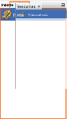
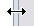
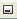

Customise the User Interface
By default on opening the software, the User Interface is displayed in a predefined position.

The User Interface consists of:
- The Main menu bar area within the User Interface is fixed and can not be customised or moved.
- The Main tool bar area is fixed within the User Interface; the elements of the tool bar can be customised.
- The Main editor area - This area houses the Main editor by default. The Main editor can be resized, maximised, minimised, undocked, docked, closed, opened and relocated to different positions within the User Interface.
- The Explorer area - This area houses the Explorer window, the Server Connections window, the Navigator window, the Satellite View window, the Where Used window and the Strategy Viewer window by default. All of these windows can be resized, maximised, minimised, undocked, docked, closed, opened and relocated to different positions within the User Interface.
- The Output area - This area houses the History window, the Inventory window, the Validation window, Search Results window and the Output window by default. All of these windows can be resized, maximised, minimised, undocked, docked, closed, opened and relocated to different positions within the User Interface.
- The Palette area - This area houses the Palette window, the Resources window and the Properties window by default. These windows can be resized, maximised, minimised, undocked, docked, closed, opened and relocated to different positions within the User Interface.
- The Title bar - This is the blue header at the top of each window/editor. The colour of this can be changed, or it can be hidden.
Some of the areas have independent windows that can be resized, maximised, minimised, undocked, docked, closed, opened and relocated to different positions within the User Interface. This enables the user to customise the view of the system.
The user can reset the User Interface to its original view.
If a window is not visible in the User Interface, the user can initiate a window from the Main menu bar. See Open a window from the Main menu bar for more information.
By default on opening the software, the user interface is displayed in a predefined position.
Some of the areas have independent windows that can be resized, maximised, minimised, undocked, docked, closed, opened and relocated to different positions within the user interface. This enables the user to customise the view of the system.
To customise the User Interface view
- In the window you wish to close, maximise, minimise, undock, or dock, right click on the window tab located at the top of the window.
- A drop-down list will be activated.
- To close a window, select Close Window. The window will disappear from view. The window can be initiated from the Main menu bar at any time.
- To maximize a window, select Maximize Window. The window will fill the screen. The window can be maximised at any time.
- To minimize a window, select Minimize Window. The window will revert to its previous size and in its previous location.
- To float a window either right click on the window label and select Float. The window will now be a floating window and you can now drag the window to a desired location in the User Interface or anywhere on your screen.
- Or click on the window label and drag it to the position you require.

As you move the window about the screen, the software will indicate where (if you unclick) the window will be positioned. - To reposition the window to its original position repeat step 7 until you have moved it to the position you require.
- Or dock an undocked window, select Dock Window. The window will dock to its original location.
- To resize a window, move the cursor along the edge of a window until the

icon is displayed and drag the arrow in the required direction until the window is the required size. - To change the user interface to display the Main editor and the Palette and Resources windows only, double click on the Main editor tab. To return back to original display, double click on the Main editor tab.
{kind=link}
{kind=link}
The User Interface view can be reset at any time. See the reset the User Interface view help pages for more information.
A user can also click on the Minimize Window 
{kind=link}
{kind=link}
Individual windows may also be dragged and dropped to any other location in the user interface. Simply click in the window tab and drag to the required location and drop.
Any of the windows can be closed by clicking on the  in the window tab.
in the window tab.
If a window is not visible in the User Interface, the user can open it from the Main menu bar.
| You will be unable to open the Satellite View window from the Main menu. The Satellite View window is only opened when the Decision Process Flow or Decision Setter components are open in the Main editor. It is also opened when the user is publishing. |
To open a window from the Main menu bar
- In the main system view, click on Window in the Main menu bar and select the name of the window you wish to open.
The window will display in the default predefined position in the User Interface.
By default on opening the software, the user interface is displayed in a predefined position.
Four of the areas have independent windows that can be resized, maximised, minimised, undocked, docked, closed, opened and relocated to different positions within the user interface. This enables the user to customise the view of the system.
The User Interface view can be reset at any time.
To reset the User Interface view
- In the main system view, click on Window in the Main menu bar and select Reset Windows.
The User Interface will reopen and windows can be reopened as appropriate. Once reopened they will be displayed in their default positions. See Open a window from the Main menu bar for more information.